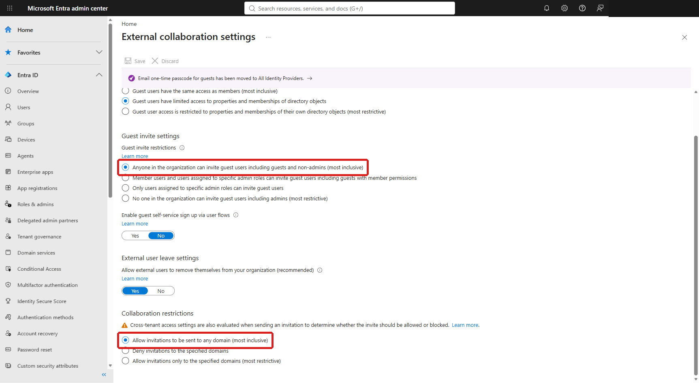
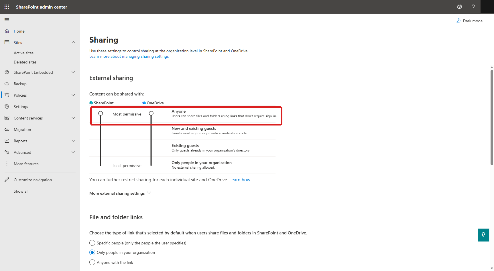
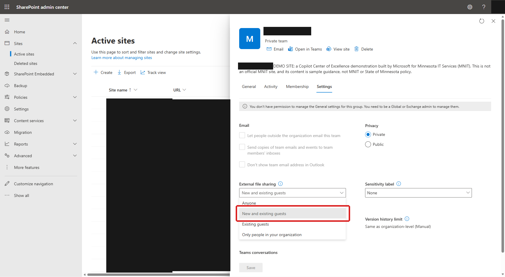
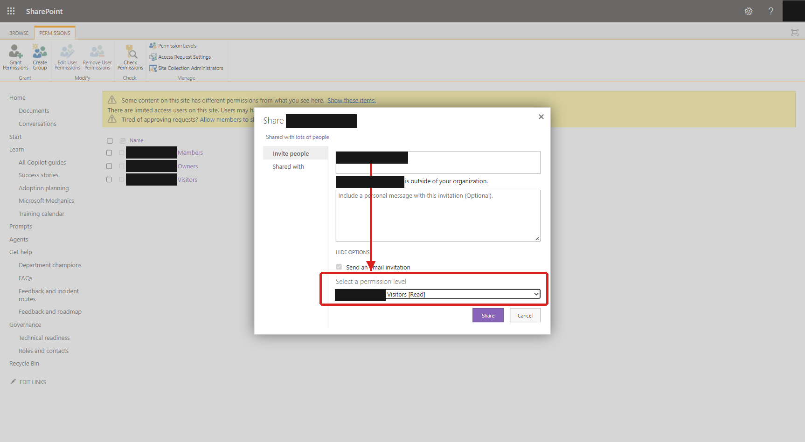

Addendum: sharing a CoE site with one external guest
A public guide is not a public SharePoint site. The guide and its video can be hosted on a public website without Microsoft sign-in. A deployed CoE remains protected by its tenant and site permissions. An external visitor must authenticate; an Anyone link does not make site pages anonymous.
Keep TeamVisibility set to Private and
CoESiteSharingCapability set to Disabled for a normal customer installation.
Do not loosen tenant policy merely to complete installation.
The four screenshots below are retained from the earlier public tour's GCC demo tenant. They illustrate controls, not the EDU installation in the video or a required policy baseline. Portal labels can vary. For cross-cloud guests, confirm that the cloud combination and B2B configuration are supported; this guide does not establish GCC High or DoD support.
1Confirm that policy permits this guest
Before changing the site, obtain the site owner's and the organization's approval for the content, intended person, access level, and preview period. In Microsoft Entra admin center → Entra ID → External Identities → External collaboration settings, confirm:
- Guest invite settings: the person sending the invitation is authorized. An admin-only or Guest Inviter policy can be appropriate; everyone does not need invitation rights.
- Collaboration restrictions: the guest's domain is permitted under the existing allow/block policy. Do not replace a reviewed allow-list with "any domain" for this preview.

For a guest from another Entra organization, review External Identities → Cross-tenant access settings, including organization-specific overrides. The resource tenant's inbound and the home tenant's outbound B2B collaboration rules must permit the scenario. B2B direct connect is a different feature. Conditional Access, authentication, sensitivity labels, and other access restrictions still apply. If policy blocks the preview, stop and use the organization's approved review route.
2Check the SharePoint tenant ceiling
In SharePoint admin center → Policies → Sharing, confirm that the existing SharePoint policy permits the approved guest-sharing level. A site cannot be more permissive than the tenant. Review domain restrictions and any restriction on which security groups may share externally.

If the tenant permits only existing guests, an authorized administrator must provision the approved guest first. If external sharing is prohibited, keep the site disabled and stop; the site-level setting cannot override that policy.
3Align the kit setting and the site-level switch
For an approved lab preview only, record the intended mode in that lab organization's
Deployment-Settings.json. Do not change the customer production settings.
| CoESiteSharingCapability | SharePoint option |
|---|---|
Disabled | Only people in your organization; the production default. |
ExistingExternalUserSharingOnly | Existing guests; use when the approved guest already exists in the directory. |
ExternalUserSharingOnly | New and existing guests; use only when new guest invitations are approved. |
Saving JSON alone does not change an existing site. Install, resume, and update runs reapply the
configured sharing mode; an omitted setting defaults to Disabled. A portal-only change can
therefore be reversed on a later authorized run. The kit neither invites the guest nor grants access.
A SharePoint Administrator can change the existing parent site as follows:
- Go to the SharePoint admin center → Active sites.
- Select the exact CoE parent site and verify its URL.
- Open the Settings tab.
- Open More sharing settings (shown as External file sharing in the older screenshot). Select Existing guests or New and existing guests, matching the approved lab setting above.
- Select Save.

No anonymous site access. Release 3.8.22 supports only the three modes above for the CoE parent site, not Anyone/anonymous sharing. A guest signs in through the configured authentication flow. Leadership Governance and Program Governance remain internal-only; do not change their channel-site sharing or membership to make a preview work.
4Adding the person as read-only (browse only, no edit)
Review all content visible to site readers before granting site-wide access. For browse-only review, an authorized site owner grants the named guest the site's built-in Visitors Read permission. Do not add a preview guest to the Team or Members group: that grants broader membership and edit rights. For a narrower review, share only approved content with Specific people — Can view.
- On the site, go to Settings (gear icon) → Site permissions → Advanced permissions settings (or browse directly to
/_layouts/15/user.aspxon the site). - On the Permissions ribbon, select Grant Permissions.
- Type the person's email address and select it once it resolves — SharePoint will label it "is outside of your organization" to confirm it recognized a guest.
- Select Show options.
- Under Select a permission level, choose
<Site name> Visitors [Read]. This grants browse/view access only. - Review the identity and permission before selecting Share. If sending an invitation, use only approved wording and recipients.

5Verify the guest experience and close the preview
Have the intended guest redeem the invitation and sign in using a separate browser profile. Owner access is not evidence of guest access. Check the approved pages and links, confirm the guest cannot edit, and confirm governance content remains unavailable. Protected documents and separately secured catalogs may have additional restrictions; Visitors membership does not bypass them.
Read is not a no-download guarantee. A visitor can read or download content as allowed by the site's policies and the content's permissions. Do not expose material that must remain internal.
- At the agreed end date, remove the guest's Visitors membership, direct grants, and preview-specific sharing links. Review other access paths rather than assuming one removal revokes everything.
- In the parent site's sharing settings, choose Only people in your organization and save.
- Set
"CoESiteSharingCapability": "Disabled"in the organization's settings before the next install, resume, or update, so a saved lab ON setting cannot reopen it. - Verify that external site access is blocked. Disabling SharePoint sharing does not delete existing grants, remove Team membership, or end Teams chat; clean up any separately approved access as needed.
Common wrong turns
- Add members is not a read-only visitor invitation. The modern group-membership flyout can add Microsoft 365 Group/Team members. Use the site permission path when the approved requirement is site-only Read access.
- A portal loading error is not proof of a sharing-policy block. Check policy and identity first, then use the supported site-permissions workflow. Do not weaken tenant policy to work around a failed Outlook or membership panel.
- Changing one switch does not grant access. Site sharing capability, permission grants, authentication, and content review are separate checks.
References and scope
Updated for release 3.8.22 from the earlier public site-tour addendum. The frozen kit's
Internal/SecurityPosture.ps1 defines the supported modes, private defaults,
governance-site restrictions, and preview shutdown guidance. No tenant settings or permissions were
changed to prepare this guide.